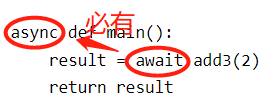

TreeviewCopyright © qgao 2021-* all right reserved, powered by aleen42
python的异步io
1 核心概念
- 普通函数定义：def
- 异步函数定义：async def，又称之为协程函数(Coroutine)
# 普通函数定义
def add2(x):
print(x+2)
return x+2
# 异步函数的定义
async def add3(x):
print("in async fun add")
return x+3
分别调用这两个函数：
add2(2) # 返回4
add3(2) # 返回一个coroutine对象，<coroutine object add3 at 0x000002ED564A5048>，并不是2+3=5这个结果
重点：协程函数想要执行需要放到事件循环里执行。
2 事件循环 Eventloop
Eventloop 是asyncio应用的核心，把一些异步函数注册到这个事件循环上，事件循环会循环执行这些函数，
- 当执行到某个函数时，如果它正在等待I/O返回，如它正在进行网络请求，或者sleep操作，事件循环会暂停它的执行去执行其他的函数；
- 当某个函数完成I/O后会恢复，下次循环到它的时候继续执行。
因此，这些异步函数可以协同(Cooperative)运行：这就是事件循环的目标。
3 执行异步函数
3.1 放入事件循环中
import asyncio
loop = asyncio.get_event_loop()
async def add3(x):
print("in async fun add")
return x+3
result = loop.run_until_complete(add3(2))
print(result)
#运行的结果是
#in async fun add
#5
3.2 await修饰函数调用
await只能用在协程函数中，所以想要用await关键字就还需要定义一个协程函数。
即有await，则函数方法声明必有async：

但main()最终还是要放进事件循环里调用：
async def main():
result = await add3(2)
return result
loop = asyncio.get_event_loop()
loop.run_until_complete(main())
4 同步执行多个异步函数
# coding:utf-8
import asyncio
import time
async def testa(x):
print("in test a")
await asyncio.sleep(3)
print("Resuming a")
return x
async def testb(x):
print("in test b")
await asyncio.sleep(1)
print('Resuming b')
return x
async def main():
start = time.time()
resulta = await testa(1)
resultb = await testb(2)
print("test a result is %d"%resulta)
print("test b result is %d"%resultb)
print("use %s time"%(time.time()-start))
if __name__ == '__main__':
loop = asyncio.get_event_loop()
loop.run_until_complete(main())
输出：
in test a
Resuming a
in test b
Resuming b
test a result is 1
test b result is 2
use 4.001966714859009 time
先执行了testa函数，然后再执行了testb函数，是串行的依次执行的。
5 并发执行多个异步函数--方法1
5.1 asyncio.gather()
如上1小节中定义了两个协程，并将它们放到另外一个协程main函数中，想要获得它们运行的结果。
事件循环的特点是当它遇到某个I/O需要等待(如这里的asyncio.sleep()函数)的时候，可以去执行其它的函数，这样，整个函数执行所需要的时间，应该是所有协程中执行时间最长的那个。
想要实现如上说法，必须得需要将协程放到asyncio.gather() 中运行，让它们并发执行：
async def main():
start = time.time()
resulta,resultb = await asyncio.gather(testa(1),testb(2))
print("test a result is %d" % resulta)
print("test b result is %d" % resultb)
print("use %s time" % (time.time() - start))
if __name__ == '__main__':
loop = asyncio.get_event_loop()
loop.run_until_complete(main())
输出：
in test b
in test a
Resuming b
Resuming a
test a result is 1
test b result is 2
use 3.001237392425537 time
注意，这里是gather()函数里的每一个协程函数都执行完了，它才返回结果，结果是一个列表，列表里的值顺序和放到gather函数里的协程的顺序是一致的。
5.2 asyncio.wait()
asyncio.wait()函数，它的参数是协程的列表。
async def main():
start = time.time()
done,pending = await asyncio.wait([testa(1),testb(2)])
print(list(done))
print(list(pending))
print(list(done)[0].result())
print("use %s time" % (time.time() - start))
if __name__ == '__main__':
loop = asyncio.get_event_loop()
loop.run_until_complete(main())
asyncio.wait() 返回一个tuple对象，对象里又包含一个已经完成的任务set和未完成任务的set，上面代码得到的结果是：
in test b
in test a
Resuming b
Resuming a
[<Task finished coro=<testa() done, defined at F:/python/python3Test/asynctest.py:7> result=1>, <Task finished coro=<testb() done, defined at F:/python/python3Test/asynctest.py:14> result=2>]
[]
1
use 3.0003058910369873 time
5.3 gather和wait的区别
- gather需要所有任务都执行结束，如果某一个协程函数崩溃了，则会抛异常，都不会有结果。
- wait可以定义函数返回的时机，可以是：
- FIRST_COMPLETED(第一个结束的),
- FIRST_EXCEPTION(第一个出现异常的),
- ALL_COMPLETED(全部执行完，默认的)
如下面的示例：要求在出现第一个异常的时候就结果，函数整体不会崩溃，只是如果这里想要获取结果的话它是一个异常对象。
# coding:utf-8
import asyncio
import time
async def testa(x):
print("in test a")
await asyncio.sleep(3)
print(1/0)
print("Resuming a")
return x
async def testb(x):
print("in test b")
await asyncio.sleep(1)
print(1/0)
print('Resuming b')
return x
async def main():
start = time.time()
done,pending = await asyncio.wait([testa(1),testb(2)],return_when=asyncio.tasks.FIRST_EXCEPTION)
print(list(done))
print(list(pending))
print("use %s time" % (time.time() - start))
if __name__ == '__main__':
loop = asyncio.get_event_loop()
loop.run_until_complete(main())
输出：
in test b
in test a
[<Task finished coro=<testb() done, defined at F:/python/python3Test/asynctest.py:16> exception=ZeroDivisionError('division by zero',)>]
[<Task pending coro=<testa() running at F:/python/python3Test/asynctest.py:10> wait_for=<Future pending cb=[Task._wakeup()]>>]
use 1.0000195503234863 time
6 并发执行多个异步函数--方法2
6.1 asyncio.ensure_future()
async def main():
start = time.time()
taska = asyncio.ensure_future(testa(1)) # 返回一个task对象，此时task进入pending状态，并没有执行
taskb = asyncio.ensure_future(testb(2))
print(taska) # 返回<Task pending coro=<testa() running at F:/python/python3Test/asynctest.py:7>>
print(taskb)
print(taska.done(), taskb.done()) # 返回False,表示它还没有结束
await taskb # 表示开始执行该协程
await taska
print(taska.done(), taskb.done()) # 当执行结束以后，taska.done() 返回True，
print(taskb.result()) # taska.done() 返回True，这时可以调用taska.result() 得到函数的返回值，如果协程还没有结束就调用result()方法则会抛个异常，raise InvalidStateError('Result is not ready.').
print(taska.result())
print("use %s time" % (time.time() - start))
if __name__ == '__main__':
loop = asyncio.get_event_loop()
loop.run_until_complete(main())
6.2 loop.create_task()
创建task对象除了使用asyncio.ensure_future()方法还可以使用loop.create_task() 方法。
async def main():
start = time.time()
taska = loop.create_task(testa(1))
taskb = loop.create_task(testb(2))
print(taska)
print(taskb)
print(taska.done(), taskb.done())
await taskb
await taska
print(taska.done(), taskb.done())
print(taskb.result())
print(taska.result())
print("use %s time" % (time.time() - start))
if __name__ == '__main__':
loop = asyncio.get_event_loop()
loop.run_until_complete(main())